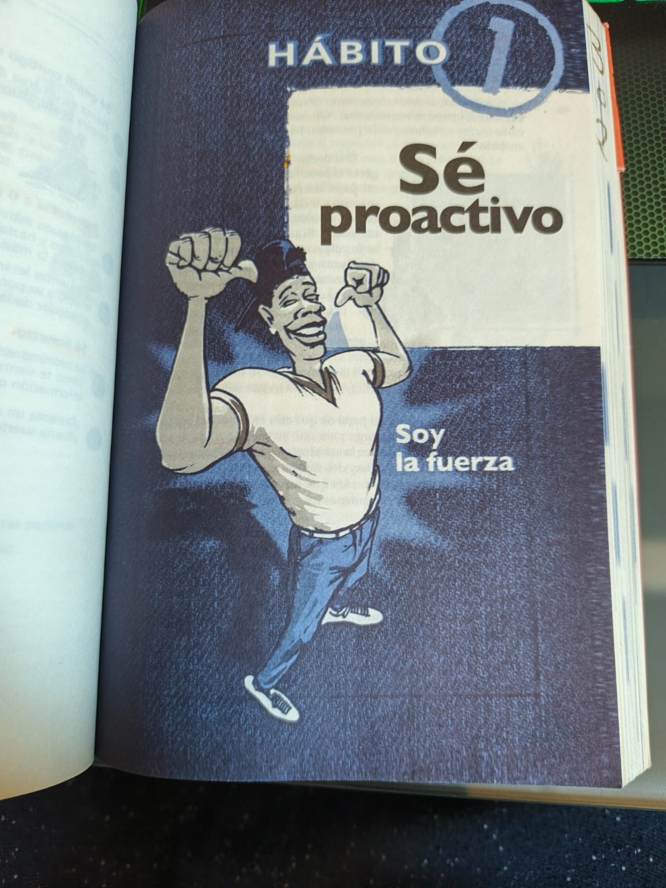
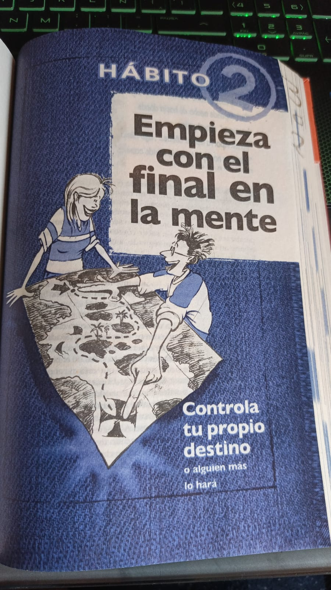
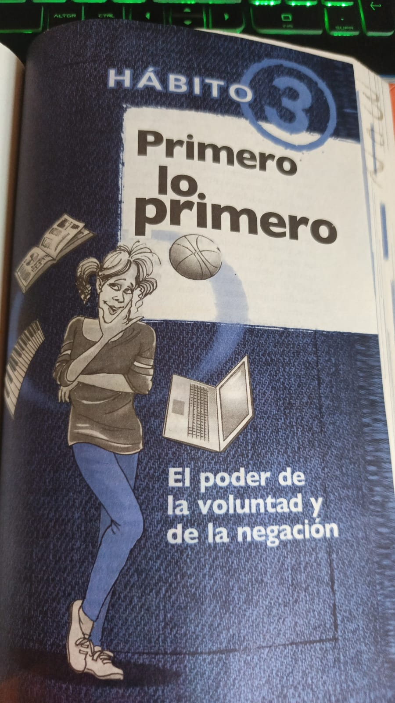

"Los 7 habitos de los adolecente altamente efectivos en la era dijital"
Autor:Sean Covey
Sean Covey
Sean Covey
Nombre completo: Sean Covey
Nacimiento: 1964, Estados Unidos
Profesión: Escritor, empresario y conferencista
Sean Covey es hijo de Stephen R. Covey, autor del famoso libro Los 7 hábitos de la gente altamente efectiva. Siguiendo el legado de su padre,
Sean adaptó esos principios para jóvenes en su libro Los 7 hábitos de los adolescentes altamente efectivos, el cual se ha convertido en un éxito mundial.
Graduado en administración por la Universidad Brigham Young y con una maestría en administración por Harvard, Sean ha trabajado como ejecutivo en FranklinCovey, una empresa global de liderazgo y educación.
Temas clave en su obra:"Liderazgo juvenil""Inteligencia emocional ""Responsabilidad personal "" Habilidades para la vida en la era digital""Los 6 hábitos más importantes para el éxito en la escuela ""The 4 Disciplines of Execution (más enfocado en negocios) "
"Capítulo 1 "
"Se proactivo"
Ser proactivo significa tomar el control de tu vida y tus decisiones, en lugar de culpar a otras personas, emociones o situaciones.
En la era digital, ser proactivo es pensar antes de publicar, actuar con responsabilidad en redes sociales y no dejar que los likes,
comentarios o el celular controlen tu estado de ánimo.
Refexion:Ser proactivo es entender que tú decides quién eres y cómo actúas, no el celular, las redes ni las emociones del momento.
En un mundo donde es fácil culpar o reaccionar sin pensar, ser proactivo es un acto de valentía: es elegir con conciencia, hacer lo correcto y construir tu futuro con cada decisión, en línea y fuera de ella.
Evidencia:

"Capítulo 2 "
"empieza con el final en la mente"
Este hábito te invita a tener una visión clara de lo que quieres lograr en tu vida. Es como tener un mapa antes de empezar un viaje.
Significa pensar en tu futuro, establecer metas y tomar decisiones basadas en quién quieres llegar a ser.
Reflexión:.
En un mundo lleno de distracciones, es fácil perder el rumbo y vivir sin propósito. Este hábito me recuerda que cada decisión que tomo hoy moldea el futuro que estoy construyendo.
Tener claro quién quiero ser me da dirección, me ayuda a decir "sí" a lo que importa y "no" a lo que me aleja de mis sueños. No se trata de vivir perfecto, sino con intención.
Evidencia:

Capítulo 3 "
"Primero lo primero"
Este hábito trata de organizar tu vida según lo más importante, no lo más urgente o lo más fácil.
Significa que aprendas a dar prioridad a lo que realmente vale la pena, como tu educación, tus valores,
tu salud o tus metas personales, antes que distraerte con cosas que solo te dan placer momentáneo, como redes sociales, series o videojuegos.
Reflexión:.
Muchas veces dejamos lo más importante para después y perdemos el tiempo en cosas que no nos acercan a nuestros sueños. Este hábito me hace pensar en cuántas veces he elegido lo fácil en lugar de lo correcto.
Aprender a poner primero lo primero es tener el valor de decir "no" a lo que me distrae y "sí" a lo que me construye. Es vivir con intención, no solo reaccionar al momento.
Evidencia:

Pensar ganar-ganar
Este capítulo enseña que en la vida no se trata de que alguien gane y otro pierda, sino de buscar soluciones donde todos salgan beneficiados.
En vez de competir con los demás, este hábito te anima a colaborar, respetar y buscar acuerdos justos.
Vivimos en un mundo donde muchos piensan que para que uno gane, otro debe perder. Pero este hábito me recuerda que el verdadero éxito es construir juntos, no competir.
Pensar ganar-ganar es dejar atrás los celos y la comparación para enfocarme en el respeto, la empatía y los acuerdos justos. En vez de subir solo, prefiero subir con otros. Todos podemos ganar si cambiamos nuestra forma de ver la vida.